Analista en Sistemas | Estudiante de Licenciatura en Sistemas
Fuera del ámbito académico y profesional, dedico gran parte de mi tiempo libre al deporte. Es algo que disfruto mucho y que me ayuda a mantener el equilibrio entre el estudio, el trabajo y el descanso.
Me encanta entrenar y competir en pádel. Es un deporte que combino con amigos y compañeros, y que además de mantenerme activo me permite competir y seguir mejorando constantemente.

También entreno de forma regular en el gimnasio. Es un hábito que mantengo por disciplina y bienestar físico, y que se complementa muy bien con el pádel a la hora de mejorar el rendimiento deportivo en general.
Nota: las imágenes de esta sección son ilustrativas. Podés reemplazarlas por fotos
propias guardando los archivos dentro de la carpeta images y actualizando el
atributo src de cada etiqueta img.
© 2026 Santiago Cañaz. Sitio desarrollado con HTML y CSS.